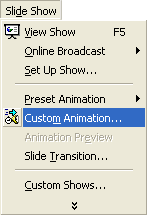
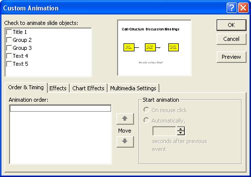
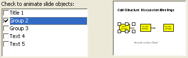
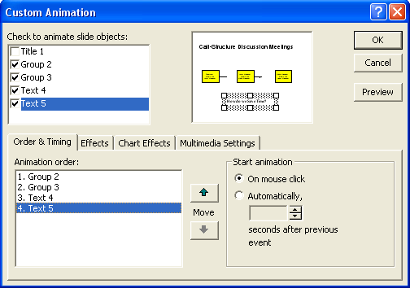
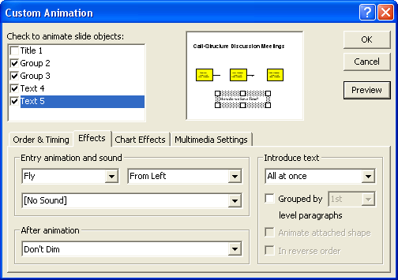

Free
powerpoint
Tutorials
|
Free
powerpoint
Tutorials
|
|
 home home |
Stay at Home and Learn | ||||
Custom Animation - PowerPoint 2000 |
|||||
|
Flow Charts 1, 2, 3, 4, 5, 6, 7 Tables Charts
If you've been following along with the lessons, you should now have a slide that looks like this:
What we're going to do for the animation is, when the slide first appears, have nothing on the slide except the heading at the top. When the mouse button is clicked each object will appear from the left. To see it in action, launch Presentation 3 again. Navigate to slide 5 and watch what happens when you click the left mouse button. To set up this Custom Animation for your own slide 5, click Slide Show from the menu bar at the top of PowerPoint. From the Slide Show menu, select Custom Animation:  You should then see the Custom Animation dialogue box appear. This one:  Any object that you have on your slide will appear in the text area at the top, under Check to animate slide objects. For us, these are: Title1 With names like that, it's difficult to know which object is which. Put a tick in the box next to each object's name, and you'll see it selected in the preview window:  Place a tick in all the boxes except for Title 1 (because we don't want to animate the title). Your dialogue box will then look like this:  Notice the area at the bottom, on the Order & Timing tab. This is a list of all the objects you want to animate. If an object is not in the correct order, you can select it, and then use the two arrow keys to Move it up or down. Under Start animation, we have selected on mouse click. But you can automate it by selecting the Automatically option, and then specify how many seconds should elapse before the next object appears. Click the Preview button at the top to see if all the objects are animating in the correct order. It should the first yellow shape, then the second, then the third, and finally the text at the bottom. When you're happy with the order and timing, click the Effect tab next to it. The dialogue box will change to this:  This is a good area to play around with! At the moment, the animation is set to Fly, and From Left. We have No Sound, Don't Dim for After Animation, and All at once is the setting for Introduce text. Change these settings to anything you like. Then click the Preview button to see if you like the effect or not. The Effect will only happen on the object that is selected in the area at the top, under Check to animate slide objects. This means you can have a different effect for each object on your slide (but it's not recommended that you do.). Click on the Group 2 object at the top, and see if you like the Split effect When you're happy with your choices, click OK. But we had Fly, From Left for all four objects.
In the next part of this tutorial, you'll get some more practice with creating Flow Charts in PowerPoint. |
||||